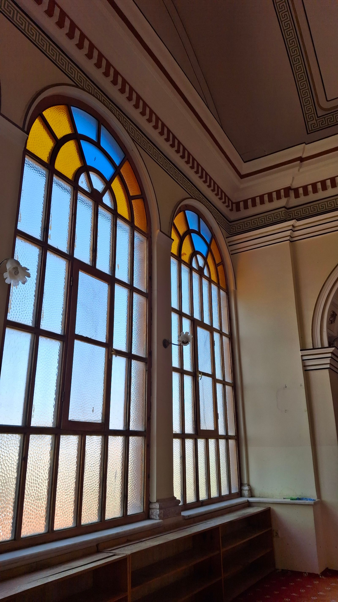

Enquiry
Commission a survey.
One path, no friction: write to rosalind@fenn-glass.example, or use the form. Tell us which window, in which building, and what you have noticed — a crack, a bow, a panel gone dark. A photograph from the floor is worth a paragraph.
Honest label: this form is a demonstration. It validates your entry and issues a reference number on this page, but it transmits nothing and books nothing. The email address is the working path — in a live commission, both would reach the same desk.
Enquiry noted — reference FG-2026-0000
Thank you, —. In a live commission this enquiry, for —, would now be on the studio desk, and the reply would come within two working days with survey dates and the day rate from Table F1. Because this form is a demonstration, nothing has been sent — please use the email address above for a real enquiry.
The survey, when it happens, will produce the same kind of report this site opens with: a panel map, a register, grades — and recommendations that may include doing nothing at all.
